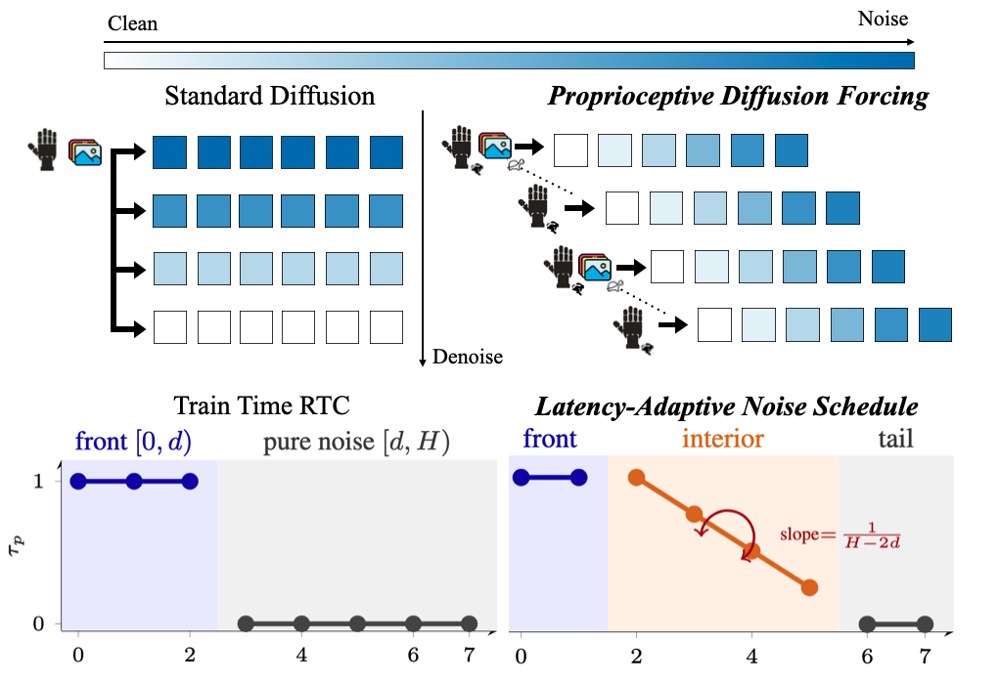

Generalist robot policies use large vision-language-action (VLA) backbones and predict multi-step action chunks. Each chunk runs open-loop, so the policy cannot react to new sensing mid-chunk, and the perception-to-action pipeline (large backbone + multi-step denoising) is too slow to simply re-query more often.
πR2 makes these policies reactive and real-time without shrinking the backbone:
On a real xArm6 + XHand fine-tuned from GR00T-N1.7, πR2 closes the loop at 25 Hz on a single RTX A5000 (≈ 4× faster than the baseline) and improves real-world success rate by up to +20 absolute points over the strongest baseline.
Fine-tuned GR00T-N1.7 on xArm6 + XHand. Each method evaluated over 20 trials per task with randomized initial object placement.
⏱ All videos play at 1× real-time speed
Pick up a ball, drop it into the bowl, carry the bowl to the cutting board without spilling.
Pull a book out of the stack and place it into the basket.
Each clip above is one representative trial.
Side-by-side: human teleoperation demo (used to fine-tune GR00T-N1.7) vs πR2 rollout, both at the same closed-loop 25 Hz tick rate.
d = per-call delay in 25-Hz control ticks (1 tick ≈ 40 ms). For baselines, vision is computed synchronously per call so a single d covers both. πR2 decouples them: d is the proprioception delay (action-head only), and dvis ≈ 4 ticks (~100 ms) is the staleness of the asynchronously-cached visual feature. SR = success rate over 20 trials. Prog = subgoal progress score (Don't Spill: 4 subgoals, max 80; Tidy Up Book: 2 subgoals, max 40).
| Method | d (delay, ticks) | Don't Spill | Tidy Up Book | ||
|---|---|---|---|---|---|
| SR | Prog | SR | Prog | ||
| Flow, Synchronous | 4–5 | 4/20 | 16/80 | 4/20 | 9/40 |
| Flow, Naive Async (TE) | 4–5 | 7/20 | 30/80 | 7/20 | 15/40 |
| Flow, Train-Time RTC | 5 | 9/20 | 52/80 | 8/20 | 18/40 |
| πR2 (ours) | d = 1–2 dvis ≈ 4 |
10/20 | 58/80 | 12/20 | 24/40 |